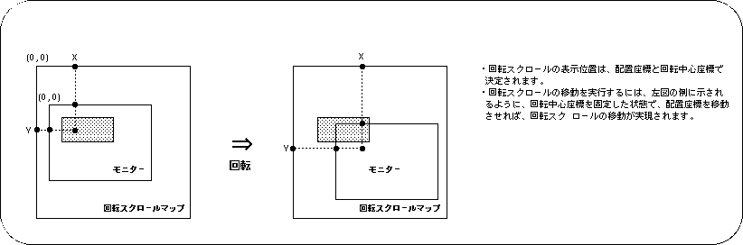
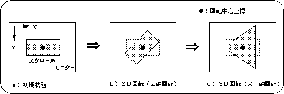
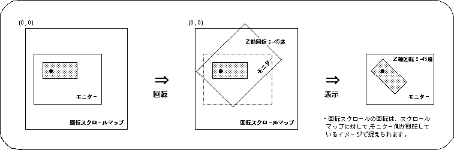
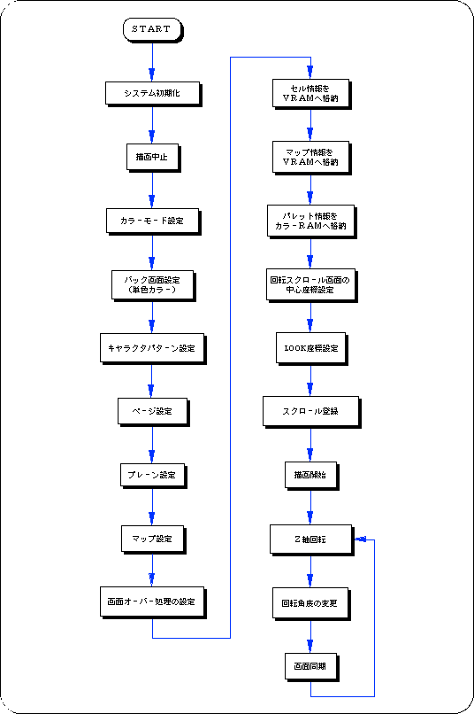
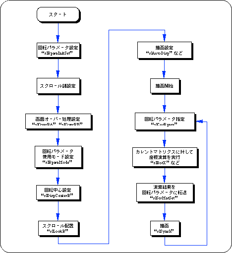
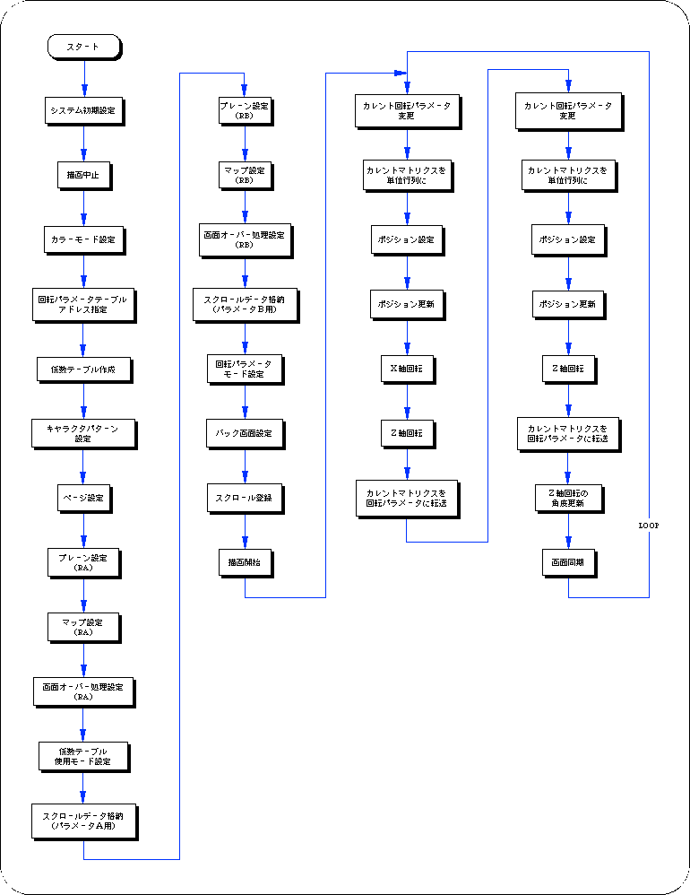

★SGL User's Manual
★PROGRAMMER'S TUTORIAL
★SGL User's Manual
★PROGRAMMER'S TUTORIAL



次のサンプルプログラム（リスト8-5）は、ＳＧＬライブラリ関数を用いて、実際に回転スクロール画面の回転操作を行った例です。
リスト8-5 sample_8_9_1：スクロールの２Ｄ回転
/*----------------------------------------------------------------------*/
/* Graphic Rotation */
/*----------------------------------------------------------------------*/
#include "sgl.h"
#include "ss_scrol.h"
#define RBG0_CEL_ADR VDP2_VRAM_A0
#define RBG0_MAP_ADR VDP2_VRAM_B0
#define RBG0_COL_ADR ( VDP2_COLRAM + 0x00200 )
#define RBG0_PAR_ADR ( VDP2_VRAM_A1 + 0x1fe00 )
#define BACK_COL_ADR ( VDP2_VRAM_A1 + 0x1fffe )
void ss_main(void)
{
ANGLE yama_angz = DEGtoANG(0.0);
FIXED posx = toFIXED(128.0) , posy = toFIXED(64.0);
slInitSystem(TV_320x224,NULL,1);
slTVOff();
slPrint("Sample program 8.9.1" , slLocate(9,2));
slColRAMMode(CRM16_1024);
slBack1ColSet((void *)BACK_COL_ADR , 0);
slRparaInitSet((void *)RBG0_PAR_ADR);
slCharRbg0(COL_TYPE_256 , CHAR_SIZE_1x1);
slPageRbg0((void *)RBG0_CEL_ADR , 0 , PNB_1WORD|CN_10BIT);
slPlaneRA(PL_SIZE_1x1);
sl1MapRA((void *)RBG0_MAP_ADR);
slOverRA(2);
Cel2VRAM(yama_cel , (void *)RBG0_CEL_ADR , 31808);
Map2VRAM(yama_map , (void *)RBG0_MAP_ADR , 32 , 16 , 1 , 0);
Pal2CRAM(yama_pal , (void *)RBG0_COL_ADR , 256);
slDispCenterR(toFIXED(160.0) , toFIXED(112.0));
slLookR(toFIXED(128.0) , toFIXED(64.0));
slScrAutoDisp(NBG0ON | RBG0ON);
slTVOn();
while(1){
slZrotR(yama_angz);
yama_angz += DEGtoANG(1.0);
slSynch();
}
}


| テーブル使用： | [K_OFF | K_ON ]| |
| 係数データサイズ： | [K_2WORD | K_1WORD]| |
| 係数モード： | [K_MODE0 | K_MODE1 | K_MODE2 | K_MODE3]| |
| ラインカラー： | [K_LINECOL ]| |
| 変形単位： | [K_DOT | K_LINE ]| |
| 係数固定： | [K_FIX ]| |
リスト8-6 sample_8_9_2：３Ｄ回転
#include "sgl.h"
#include "ss_scrol.h"
#define RBG0RB_CEL_ADR (VDP2_VRAM_A0 )
#define RBG0RB_MAP_ADR (VDP2_VRAM_B0 )
#define RBG0RB_COL_ADR (VDP2_COLRAM + 0x00200)
#define RBG0RA_CEL_ADR (RBG0RB_CEL_ADR + 0x06e80)
#define RBG0RA_MAP_ADR (RBG0RB_MAP_ADR + 0x02000)
#define RBG0RA_COL_ADR (RBG0RB_COL_ADR + 0x00200)
#define RBG0_KTB_ADR (VDP2_VRAM_A1 )
#define RBG0_PRA_ADR (VDP2_VRAM_A1 + 0x1fe00)
#define RBG0_PRB_ADR (RBG0_PRA_ADR + 0x00080)
#define BACK_COL_ADR (VDP2_VRAM_A1 + 0x1fffe)
void ss_main(void)
{
FIXED posy = toFIXED(0.0);
ANGLE angz = DEGtoANG(0.0);
ANGLE angz_up = DEGtoANG(0.0);
slInitSystem(TV_320x224,NULL,1);
slTVOff();
slPrint("Sample program 8.9.2" , slLocate(9,2));
slColRAMMode(CRM16_1024);
slRparaInitSet((void *)RBG0_PRA_ADR);
slMakeKtable((void *)RBG0_KTB_ADR);
slCharRbg0(COL_TYPE_256 , CHAR_SIZE_1x1);
slPageRbg0((void *)RBG0RB_CEL_ADR , 0 , PNB_1WORD|CN_12BIT);
slPlaneRA(PL_SIZE_1x1);
sl1MapRA((void *)RBG0RA_MAP_ADR);
slOverRA(0);
slKtableRA((void *)RBG0_KTB_ADR , K_FIX | K_DOT | K_2WORD | K_ON);
Cel2VRAM(tuti_cel , (void *)RBG0RA_CEL_ADR , 65536);
Map2VRAM(tuti_map , (void *)RBG0RA_MAP_ADR , 64 , 64 , 2 , 884);
Pal2CRAM(tuti_pal , (void *)RBG0RA_COL_ADR , 160);
slPlaneRB(PL_SIZE_1x1);
sl1MapRB((void *)RBG0RB_MAP_ADR);
slOverRB(0);
slKtableRB((void *)RBG0_KTB_ADR , K_FIX | K_DOT | K_2WORD | K_ON);
Cel2VRAM(sora_cel , (void *)RBG0RB_CEL_ADR , 28288);
Map2VRAM(sora_map , (void *)RBG0RB_MAP_ADR , 64 , 20 , 1 , 0);
Pal2CRAM(sora_pal , (void *)RBG0RB_COL_ADR , 256);
slRparaMode(K_CHANGE);
slBack1ColSet((void *)BACK_COL_ADR , 0);
slScrAutoDisp(NBG0ON | RBG0ON);
slTVOn();
while(1)
{
slCurRpara(RA);
slUnitMatrix(CURRENT);
slTranslate(toFIXED(0.0) , toFIXED(0.0) + posy , toFIXED(100.0));
posy -= toFIXED(5.0);
slRotX(DEGtoANG(-90.0));
slRotZ(angz);
slScrMatSet();
slCurRpara(RB);
slUnitMatrix(CURRENT);
slTranslate(toFIXED(160.0) , toFIXED(155.0) , toFIXED(100.0));
slRotZ(angz);
slScrMatSet();
angz_up += DEGtoANG(0.5);
angz = (slSin(angz_up) >> 4);
slSynch();
}
}

★SGL User's Manual
★PROGRAMMER'S TUTORIAL